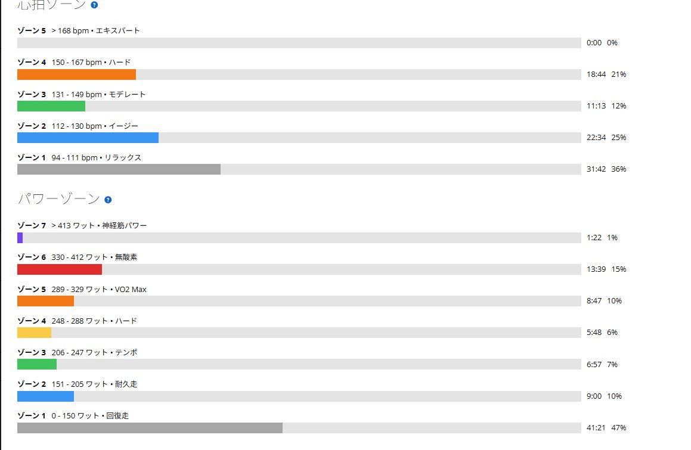

1本目348Wから5本目317Wへ。後半は垂れたけれど、外ゴルビーを最後まで完遂
今日は唐沢で外ゴルビー5分×5。5本とも止めずに完遂できた一方で、出力は348W、339W、333W、323W、317Wと少しずつ下がった。
最後まで走り切れたので失敗ではない。ただ、きれいに揃ったとも言いにくい。今回はその中間にある、次へつながるゴルビーになった。

5本完遂。でも出力はきれいに揃わなかった
結果は1本目348W、2本目339W、3本目333W、4本目323W、5本目317W。5本平均は約332Wで、体重75kgなら約4.43W/kgになる。
平均だけを見ると狙った範囲に入っている。しかし1本目と5本目の差は31Wある。数字を一つにまとめると悪くないのに、並べると課題がよく見える。
- 1本目348W
- 2本目339W
- 3本目333W
- 4本目323W
- 5本目317W
1本目348Wは少し速すぎた
狙いは各本330〜340Wだった。1本目の348Wは少しだけ元気が良すぎる。外で走ると勾配や路面に合わせて踏むため、ローラーほど数字を固定しにくい。それでも最初の5分でもう少し抑えられれば、後半の落ち幅は小さくできたはずだ。
1本目で貯金を作ったつもりが、後半にきっちり回収された。ゴルビーはこういうところが分かりやすい。
5本目317Wでもメニューは崩れていない
5本目は317Wまで落ちた。それでもFTP275Wに対して約115%なので、完全に失速したわけではない。苦しくなってからも5分を終えたことには意味がある。
今回は「できなかった日」ではなく「完遂したけれど配分に改善の余地があった日」と見るのがちょうどいい。成功か失敗かの二択にすると、せっかくの情報が雑になる。

心肺より脚が先に落ちた
体感では呼吸が完全に限界になる前に、脚の出力と踏み続ける感覚が先に落ちた。心拍は最大167bpmまで上がっているが、最後は心肺よりも脚側の持続力が足りなかった印象が強い。
登りで踏み続ける力を伸ばしたい今のテーマには、かなり素直な課題が出た。きついけれど、何を直すか分からない日よりはありがたい。
前日のSSTと合わせてTSS205
前日はローラーでSST25分×2を行い、249Wと254Wで完遂している。TSSは85.2。今日の外ゴルビーはTSS120だったので、二日間では合計205.2になった。
今日だけを見ると後半の垂れが気になる。ただ前日の50分SSTまで含めれば、脚が先に落ちたことにも納得はできる。毎回TSS120を狙う必要はなく、今回は二日間まとめて負荷を受け止めた日として記録しておく。
今回やってみて思ったこと
外ゴルビーを5本完遂できたのはよかった。前回のように最後まで高く揃えられなかったのは少し悔しいが、原因はかなり分かりやすい。次は1本目を335W前後に抑え、5本を320〜335Wの中へ並べたい。
平均を上げるより、まず落ち幅を15W以内へ。最初から強さを見せようとせず、最後まで同じ顔で踏める方がたぶん本当に強い。
自分用メモ
- メニュー唐沢ゴルビー5分×5
- 5本の出力348W / 339W / 333W / 323W / 317W
- 全体1時間27分 / 30.5km / NP251W / IF0.912 / TSS120
- 心拍平均124bpm / 最大167bpm
- 前日SST25分×2 / TSS85.2
- 次回1本目335W前後、5本を320〜335W、落ち幅15W以内